Candidates Running for President in 2020
Michael Bennett
Democrat
Michael’s Campaign Website
Description: U.S. Senator of Colorado
Issues Passionate About: Michael Bennet wants to modernize the country’s economy in technology fields such as artificial intelligence and increasing infrastructure spending. He also wants to restore core American Values such as the importance of free speech as well as immigration systems.
Joe Biden
Democrat
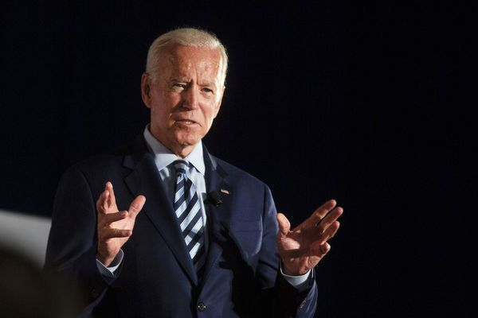Joe’s Campaign Website
Description: Former Vice President to the 44th President of the United States, Barack Obama
Issues Passionate About: Joe Biden wants to build up economic protections for low-income workers in industries such as manufacturing and fast food. Also, he wants to rebuild the backbone of the country on the Middle Class, as well as, making sure that the United States of America is a place for everyone.
Cory Booker
Democrat
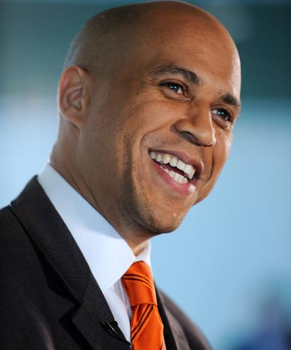Cory’s Campaign Website
Description:U.S. Senator of New Jersey
Cory Booker wants to build up America as a nation of justice since he is very passionate about topics such as Gun Violence, Equality for LGBTQ people, and Equality for People with Disabilities. He also plans to make sure that everyone has access to the American Dream by creating free healthcare for everyone and public education for every child.
Steve Bullock
Democrat
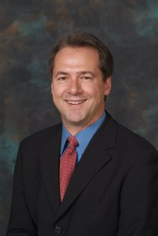Steve’s Campaign Website
Description: Governor of Montana
Issues Passionate About:Steve Bullock believes that the influence of people with a ton of money should be limited. He plans to sign several executive orders about this problem in America, if elected.
Pete Buttigieg
Democrat
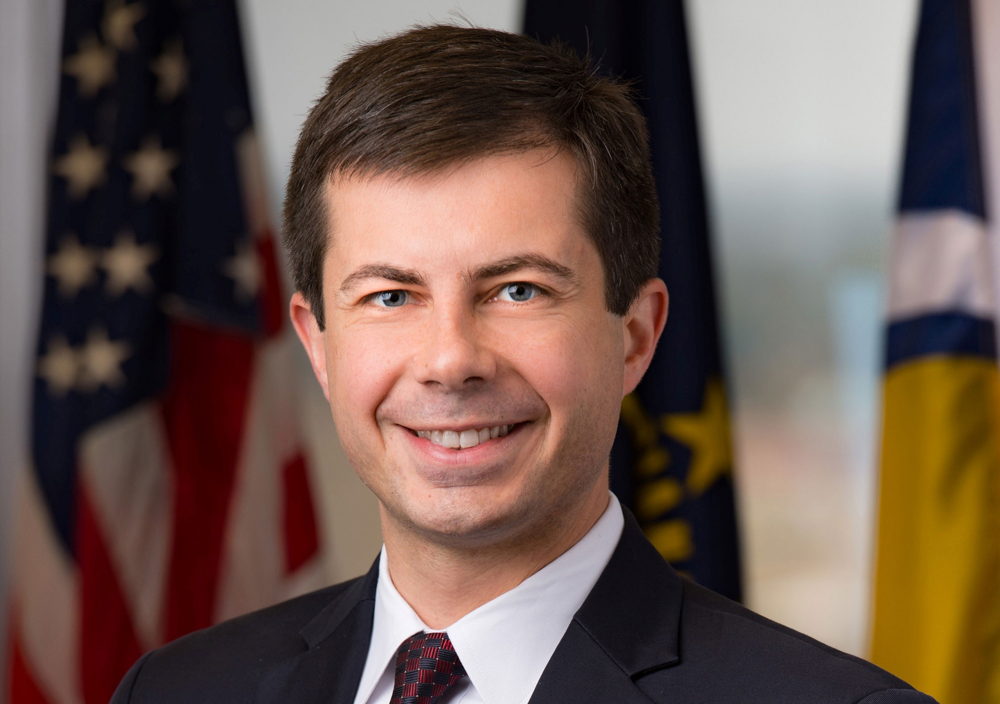Pete’s Campaign Website
Description: Mayor of South Bend, Indiana
Pete Buttigreg is very passionate about topics such as Free Healthcare for all, LGBTQ Rights, and Investing in America’s teachers. He plans on making these issues he cares about come to life, if elected.
Julián Castro
Democrat
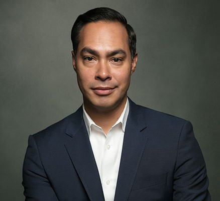Julian’s Campaign Website
Description: Former Secretary of Housing and Urban Development
Issues Passionate About:Julián plans to create efficient policies for Immigration and Education. He believes that both these things are some of the many things our country needs to work on.
Bill De Blasio
Democrat
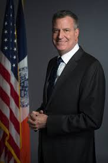Bill’s Campaign Website
Mayor of New York
If elected, Bill wants to ensure that the American economy is an economy that puts working families first. He also believes in topics like Criminal Justice Reform and Affordable Housing.
John Delaney
Democrat
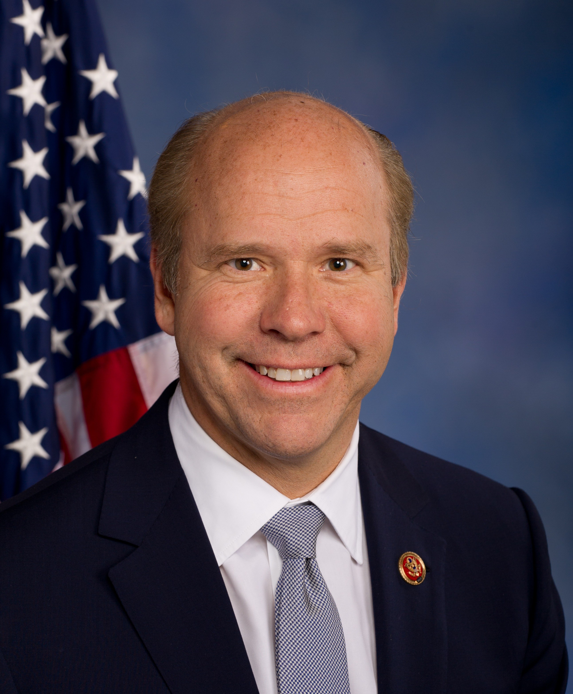John’s Campaign Website
Description: U.S. Representative of Maryland
Issues Passionate About:If elected John’s administration will prioritize topics such as Women’s Rights, Climate Change, Universal HealthCare, and Focus on Artificial Intelligence Strategies.
Tulsi Gabbard
Democrat
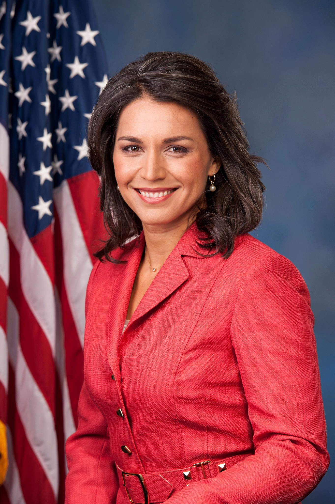Tulsi’s Campaign Website
Description: U.S. Representative of Hawaii
Issues Passionate About: Tulsi is very passionate about creating a country that does not have to fear of Nuclear War, but instead encourages time spent with other individuals around them.
Kirsten Gillibrand
Democrat
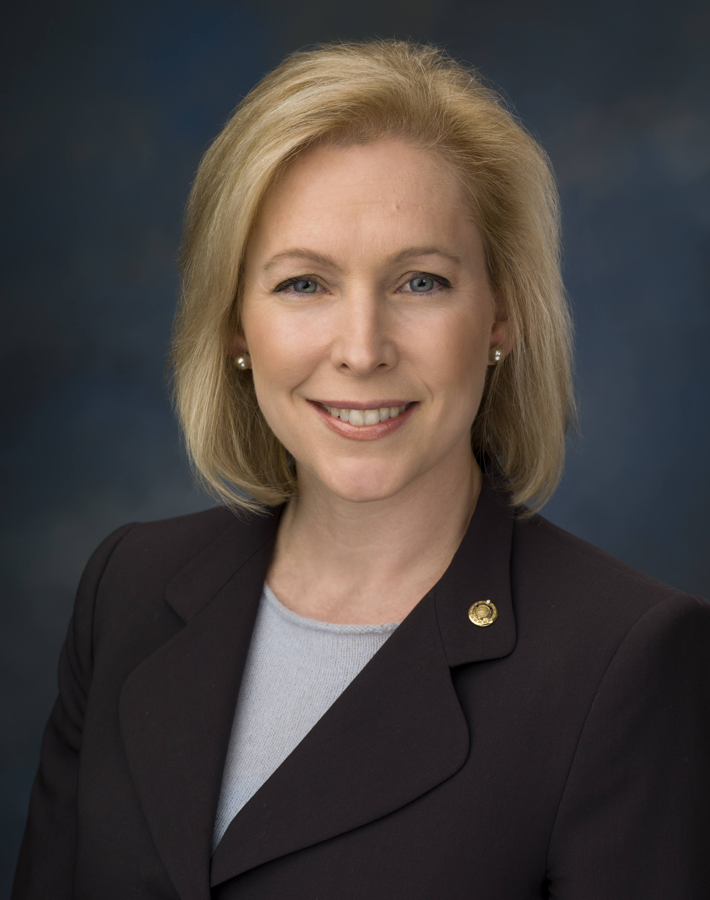Kristen’s Campaign Website
Description: U.S. Senator of New York
Issues Passionate About: Kristen, if elected, she will prioritize fighting for women and families, making the economy work for everyone, and protecting the planet.
Kamala Harris
Democrat
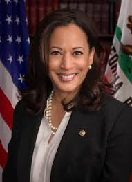Kamala’s Campaign Website
Description: U.S. Senator of California
Issues Passionate About: John is planning to make America a place where there is Economy & Economic Opportunity for All. He is passionate about Raising the Minimum Wage and Affordable College.
Jay Inslee
Democrat
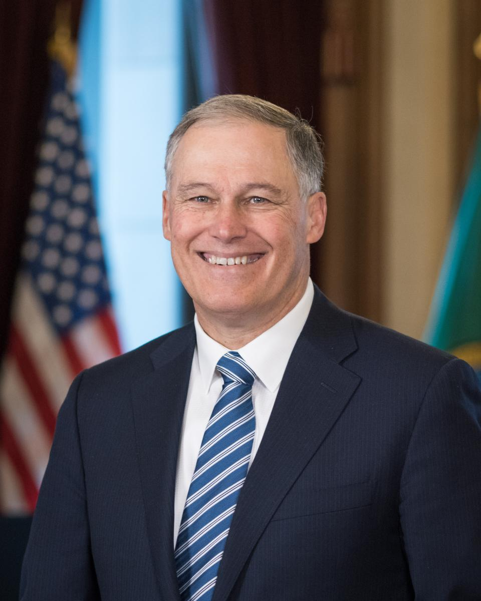Jay’s Campaign Website
Description: Governor of Washington
Issues Passionate About:Jay is planning to make fixing Climate Change a priority for America, if elected. He wants to make America have freedom from Fossil Fuels as well as being an evergreen economy.
Amy Klobuchar
Democrat
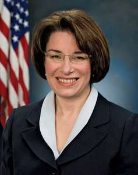Amy’s Campaign Website
Description: U.S. Senator of Colorado
Issues Passionate About: Amy Klobuchar plans if elected to rebuild America’s relationship with allies and restore America’s standing among other countries in the world.
Beto O’Rourke
Democrat

Beto’s Campaign Website
Description:Former U.S. Representative of Texas
Issues Passionate About: Beto wants to make America a place where immigrants are welcome. He is passionate about Free HealthCare for all and Equality for all.
Tim Ryan
Democrat
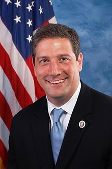Tim’s Campaign Website
Description: U.S. Representative of Ohio
Issues Passionate About: Tim wants to make America a place where the American Dream is reachable for everyone. He believes that HealthCare is a right and will work hard to make it happen in the United States.
Bernie Sanders
Democrat

Bernie’s Campaign Website
Description: U.S. Senator of Vermont
Issues Passionate About: Bernie wants to achieve if elected economic, racial, social, and environmental justice for the people of America.
Elizabeth Warren
Democrat

Elizabeth’s Campaign Website
Description: U.S. Senator of Massachusetts
Elizabeth wants to make America a country for the Middle Class as well as she wants to create Equal Justice for all.
Marianne Williamson
Democrat
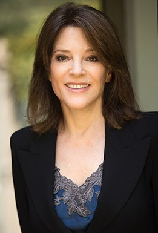Description: Author
Issues Passionate About: Marianne is very passionate about fixing the ongoing Climate Change issue as well as increasing the amount of Child Advocacy in America.
Andrew Yang
Democrat
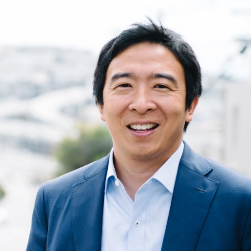Andrew’s Campaign Website
Description: Entrepreneur
Issues Passionate About: Andrew has created a plan called the Freedom Dividend which is a universal basic income for a person without having to fulfill a work requirement. If elected, he would make this plan in America.
Donald Trump
Republican

Donald’s Campaign Website
Description: The 45th President of the United States of America.
Issues Passionate About: President Trump has created many jobs for working class Americans as well as created many strategies for the topic of Immigration. If reelected, he will continue to improve these topics.
William Weld
Republican
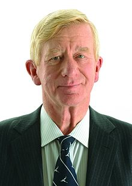William’s Campaign Website
Description: Governor of Massachusetts
Issues Passionate About: Wiliam Weld is very passionate about topics such as Equality for LGBTQ people as well as supports the topic of Aborton. If elected, he will work on topics such as Immigration and Free HealthCare for all.